ThingsBoard Sparkplug Integration
Configure the MQTT Sparkplug API to collect IoT data from Pareto Anywhere.
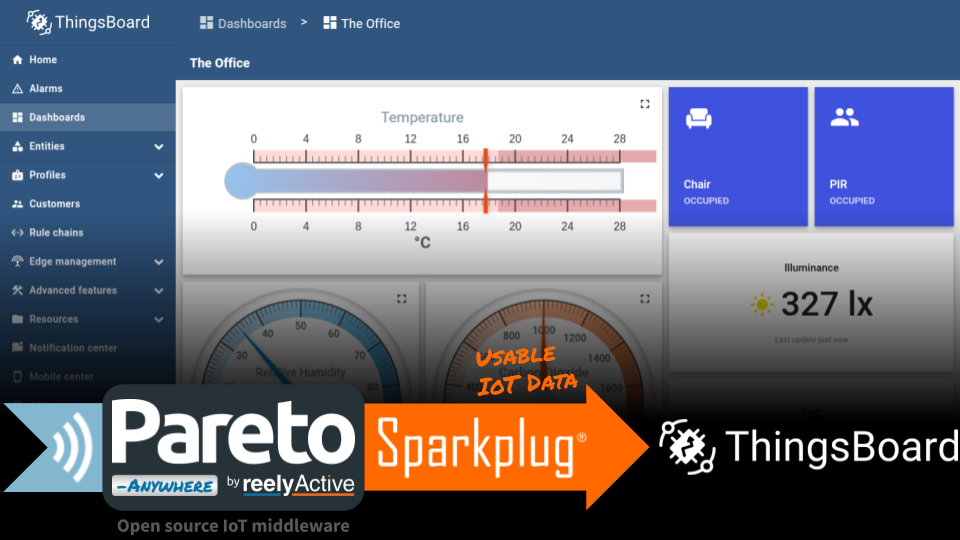
The TL;DR (Too Long; Didn't Read)
Learn how to configure MQTT Sparkplug in ThingsBoard to collect data from Pareto Anywhere.
- What's Pareto Anywhere?
- Pareto Anywhere is open source IoT middleware that makes the data from just about anything usable.
- What's ThingsBoard?
- ThingsBoard is an open-source IoT platform for data collection, processing, visualization, and device management.
- Why MQTT Sparkplug?
- Both ThingsBoard and Pareto Anywhere support Sparkplug®, which facilitates standards-based integration.
Prerequisites
Pareto Anywhere (with barnacles-sparkplug) installed.
-

-
Run Pareto Anywhere on a PC
Our step-by-step guide to install and run on a Windows/Mac/Linux PC (or server).*
* Add the /barnacles-sparkplug module to act as MQTT Sparkplug client.
Installing ThingsBoard locally Step 1 of 2
[OPTIONAL] Install ThingsBoard on the same Linux machine as Pareto Anywhere.
- Why run locally?
- For standalone and PoC deployments, running ThingsBoard Community Edition alongside Pareto Anywhere simplifies integration and operation.
- Can I run remote?
- Yes, of course! Skip this step and configure barnacles-sparkplug to connect to ThingsBoard's MQTT broker by specifying the remote server.
Skip this step if using an existing ThingsBoard instance!
Our instructions assume a Debian-based flavour of Linux such as Ubuntu or Pi OS. ( Official Guides)
Install Java (OpenJDK) Part 1
ThingsBoard is programmed in Java, which may not be included by default in the given Linux distribution.
On the local server, open a terminal and refresh the package index with the command sudo apt update
Then install the latest headless OpenJDK with the command sudo apt install openjdk-21-jdk-headless*
* Change the version number (ex: 21) based on what is supported by the Linux distribution.
Confirm that the installed OpenJDK version is the default with the command sudo update-alternatives --config java
There is 1 choice for the alternative java (providing /usr/bin/java). Selection Path Priority Status ------------------------------------------------------------ * 0 /usr/lib/jvm/java-21-openjdk-arm64/bin/java 2111 auto mode 1 /usr/lib/jvm/java-21-openjdk-arm64/bin/java 2111 manual mode Press enter to keep the current choice[*], or type selection number:
At any time, it is possible to confirm the Java version with the command java -version
Install ThingsBoard Part 2
ThingsBoard v4.1 is recommended as the latest version which supports legacy Sparkplug clients (pre-Sparkplug 3.0).
In a terminal on the local server, download a specific version of ThingsBoard ( Releases Table) with the command wget https://github.com/thingsboard/thingsboard/releases/download/v4.1/thingsboard-4.1.deb*
* Find the latest release download path on /thingsboard/releases.
Then install the Debian package with the command sudo dpkg -i thingsboard-4.1.deb*
* Change the version number to match the downloaded package, if required.
Install PostgreSQL Part 3
Skip this step if a local PostgreSQL database was already installed with Pareto Anywhere!
ThingsBoard supports PostgreSQL and Cassandra databases. PostgreSQL alone is sufficient for most local deployments.
In a terminal on the local server, install PostgreSQL with the command sudo apt install postgresql
Then start the database with the command sudo service postgresql start
The PostgreSQL database will run automatically in the background.
Configure PostgreSQL Part 4
In a terminal on the local server, log into the database as the postgres user with the command sudo -u postgres psql
Once logged in, the terminal prompt should change to postgres=#, accepting database queries. Enter the following queries:
-
CREATE USER tb WITH ENCRYPTED PASSWORD 'thinboar'; -
CREATE DATABASE thingsboard WITH OWNER tb; -
exit
This will create a database called thingsboard owned by user tb with password thinboar.
Configure ThingsBoard Part 5
In a terminal on the local server, edit the thingsboard.conf file with the command sudo nano /etc/thingsboard/conf/thingsboard.conf and add the following lines:
# DB Configuration export DATABASE_TS_TYPE=sql export SPRING_DATASOURCE_URL=jdbc:postgresql://localhost:5432/thingsboard export SPRING_DATASOURCE_USERNAME=tb export SPRING_DATASOURCE_PASSWORD=thinboar # Partitioning size allowed values: DAYS, MONTHS, YEARS, INDEFINITE. export SQL_POSTGRES_TS_KV_PARTITIONING=DAYS # Restrict to 2G RAM (should not be more than half available RAM) export JAVA_OPTS="$JAVA_OPTS -Xms2G -Xmx2G"
Change the USERNAME/PASSWORD if different from those suggested in Part 4 above.
Next, run the ThingsBoard installation script with the command sudo /usr/share/thingsboard/bin/install/install.sh >1 min
Finally, start the ThingsBoard service with the command sudo service thingsboard start
ThingsBoard should now be running and connected to the local PostgreSQL database, as will be validated in Step 2, below.
Configuring MQTT Sparkplug Step 2 of 2
Create a MQTT Sparkplug B Edge of Network node for Pareto Anywhere.
- What's a EoN node?
- An Edge of Network node acts as a gateway between sensors/devices that do not natively support Sparkplug and the central MQTT broker (i.e. ThingsBoard).
- What's MQTT?
- MQTT is an open-standard publish/subscribe messaging protocol used by Sparkplug. Sparkplug defines the payload encoding schemes.
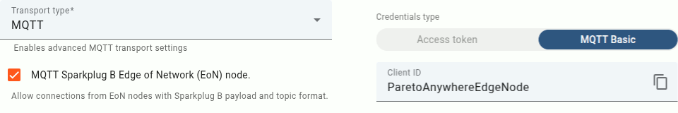
Log in to ThingsBoard Part 1
Browse to the local ThingsBoard instance at localhost:8080.*
* If connecting remotely, change localhost to the IP address of the server.
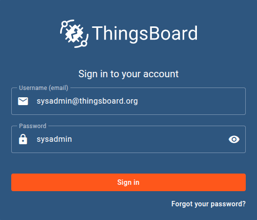
Log in to ThingsBoard using the e-mail address and password of the tenant administrator.
If this is the first login to ThingsBoard, use the default credentials sysadmin@thingsboard.org | sysadmin and then create a new tenant, and add a tenant administrator.
Add Device Profile Part 2
In ThingsBoard, from the menu at left, select Device profiles from the Profiles category.
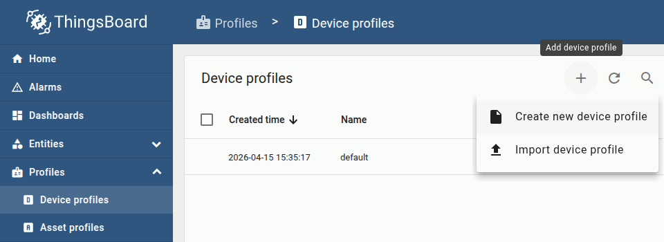
From the Device profiles page, select + to add a device profile, then select Create new device profile.
Configure the profile as follows:
- Name
- MQTT EoN Node
Configure the transport as follows:
- Transport
- MQTT
- Sparkplug B
Configure device provisioning as follows:
- Provisioning
- Disabled
Then click Add. The profile should appear in the device profiles table.
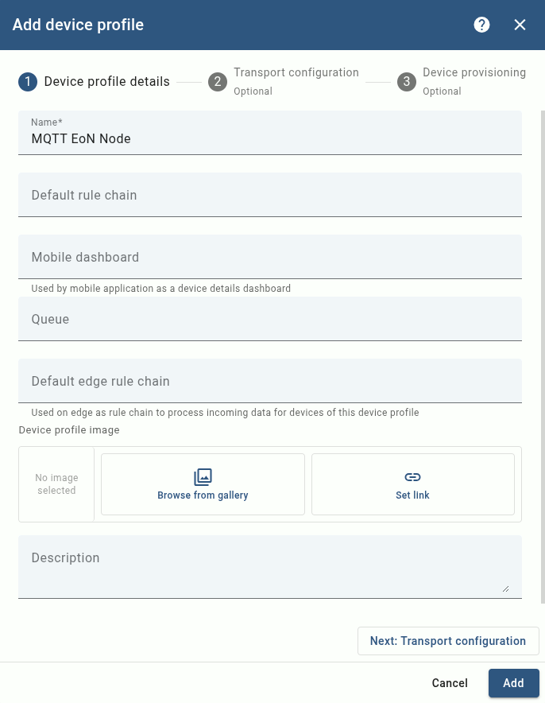
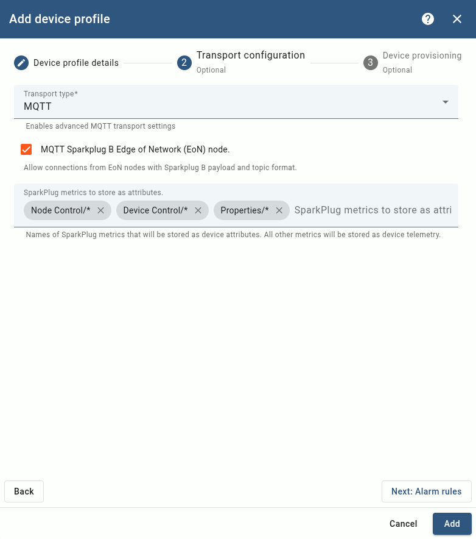
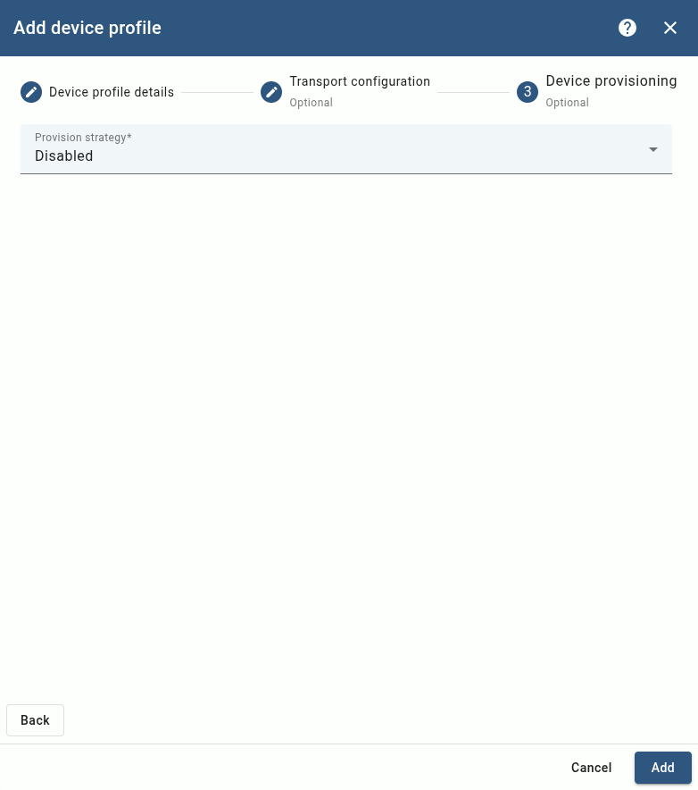
Add Device Part 4
In ThingsBoard, from the menu at left, select Devices from the Entities category.
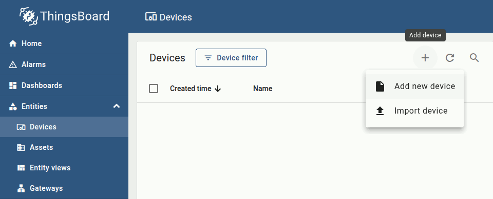
Configure the Device details as follows:
- Name
- Pareto Anywhere
- Profile
- MQTT EoN Node
- Is gateway
Configure the Credentials as follows:
- Type
- MQTT Basic
- ClientId
- ParetoAnywhereEdgeNode
- User
- (blank)
- Password
- (blank)
Then click Add. The device should appear in the devices table.
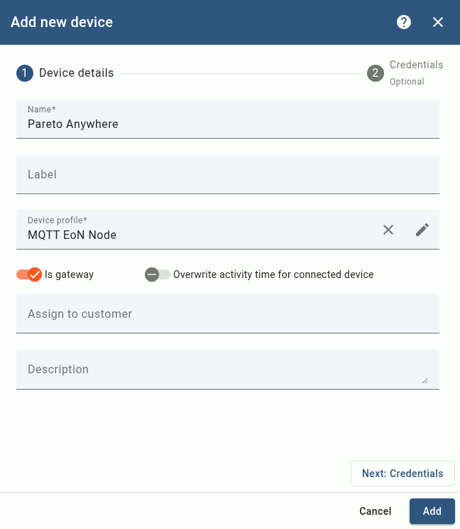
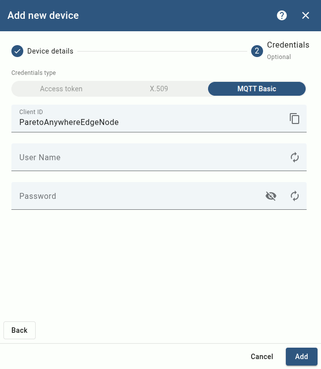
The MQTT Sparkplug API is now configured for ThingsBoard to receive data from a local Pareto Anywhere instance—the Edge of Network node—which will be validated in Step 3, below.
Connecting Pareto Anywhere Step 3 of 3
Configure the barnacles-sparkplug module of Pareto Anywhere to connect to ThingsBoard.
- What's barnacles-sparkplug?
- /barnacles-sparkplug is a module which translates the real-time data from Pareto Anywhere into Sparkplug B messages, which it publishes as a MQTT client.
- It's an EoN node?
- Yes, barnacles-sparkplug enables Pareto Anywhere to act as a Sparkplug B Edge of Network node.
Run Pareto Anywhere Part 1
Pareto Anywhere includes a startup script which initiates a local MQTT Sparkplug connection.
First, stop any running instance of Pareto Anywhere on the local server. Then, open a terminal and browse to the pareto-anywhere folder to start the Sparkplug script with the command npm run sparkplug*
* If prompted, first run npm install barnacles-sparkplug to install the module, then run the script again.
Once running, the Sparkplug script should produce console output which includes the following:
barnacles-sparkplug: connected to MQTT server
This indicates that the connection is successful, with real-time IoT data automatically published to ThingsBoard.
Configure MQTT Sparkplug (OPTIONAL) Part 2
Additional configuration of barnacles-sparkplug is required in the case of connection to:
- a remote ThingsBoard instance
- a local ThingsBoard instance using different credentials than those defined in Step 2, Part 4
Skip to Part 3 if connection was successful in Part 1, above.
From the terminal browse again to the pareto-anywhere folder and copy the Sparkplug script with the command cp bin/pareto-anywhere-sparkplug bin/pareto-anywhere-thingsboard
Open the copied script for editing with the command nano bin/pareto-anywhere-thingsboard
#!/usr/bin/env node
const ParetoAnywhere = require('../lib/paretoanywhere.js');
const BARNACLES_SPARKPLUG_OPTIONS = {
url: "mqtt://localhost",
groupId: "iot",
edgeNodeId: "paretoanywhere",
clientId: "ParetoAnywhereEdgeNode",
username: null,
password: null
};
// ----- Exit gracefully if the optional dependency is not found -----
let BarnaclesSparkplug;
try {
BarnaclesSparkplug = require('barnacles-sparkplug');
}
catch(err) {
console.log('This script requires the barnacles-sparkplug package. Try installing with:');
console.log('\r\n "npm install barnacles-sparkplug"\r\n');
return console.log('and then run this script again.');
}
// -------------------------------------------------------------------
let pa = new ParetoAnywhere();
// Add the Sparkplug interface
pa.barnacles.addInterface(BarnaclesSparkplug, BARNACLES_SPARKPLUG_OPTIONS);
Add both snippets highlighted in bold above, and edit the properties of the BARNACLES_SPARKPLUG_OPTIONS as required. Then save the script.
From the terminal in the pareto-anywhere folder, run the edited script with the command node bin/pareto-anywhere-thingsboard
Once running, the edited script should produce console output which includes the following:
barnacles-sparkplug: connected to MQTT server
This indicates that the connection is successful, with real-time IoT data automatically published to ThingsBoard.
Observe data in ThingsBoard Part 3
In ThingsBoard, from the menu at left, select Gateways from the Entities category.
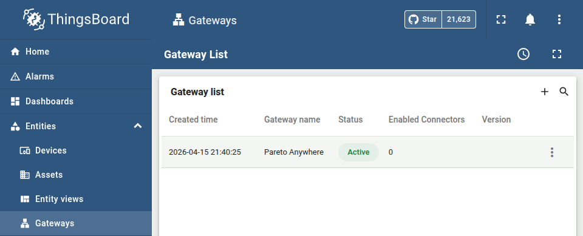
Pareto Anywhere should appear in the list with status Active. Click on Pareto Anywhere in the gateway list for more details.
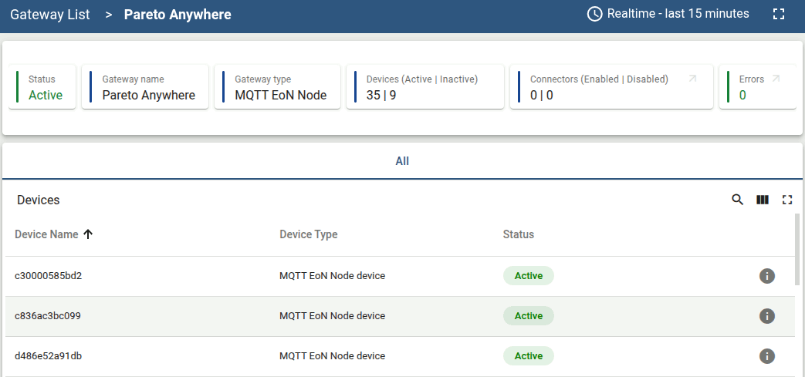
If Pareto Anywhere has a source of real-time IoT data, the corresponding devices will appear in the Devices table as MQTT EoN Node device(s).
To view the most recent telemetry from any such device, from the menu at left, select Devices from the Entities category, then select a device from the list, and finally select the Latest telemetry tab from the device details overlay.
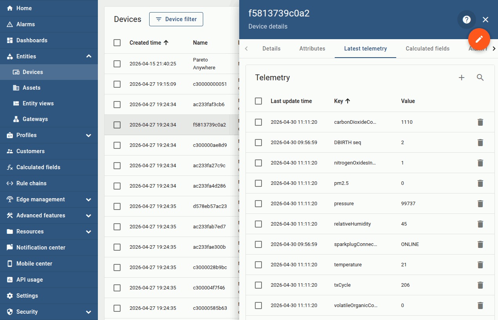
Pareto Anywhere will publish supported dynamb properties to ThingsBoard as telemetry data.
Enjoy the real-time data Part 4
Our cheatsheet details the standard properties of the dynamb JSON output from Pareto Anywhere.
-

-
Developers Cheatsheet
"Owl" you need to know about Pareto Anywhere's core data structures.


Tutorial prepared with ♥ by jeffyactive.
You can reelyActive's open source efforts directly by contributing code & docs, collectively by sharing across your network, and commercially through our packages.Where to next?
Continue exploring our open architecture and all its applications.
-

-
Directory of Devices
Browse all device configuration tutorials and development guides.
-

-
reelyActive Developers
Browse all developer documentation and tutorials.
-

-
reelyActive
Together, let's make sense of things.